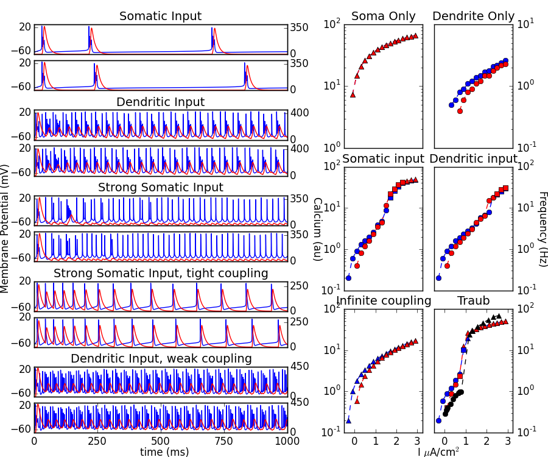

This is the readme for the models associated with the paper: Atherton LA, Prince LY, Tsaneva-Atanasova K Bifurcation analysis of a two-compatment hippocampal pyramidal cell model. Journal of Computational Neuroscience 2016 Notes describing model: The original, 2-compartment, CA3 cell, Pinsky-Rinzel model (Pinsky PF & Rinzel J. Intrinsic and network rhythmogenesis in a reduced traub model for CA3 neurons. Journal of Computational Neuroscience 1(1-2), 39-60, 1994) has several discontinuous functions that prevent the application of bifurcation analysis to study the model. Here we present a modified, fully continuous system that captures the behaviour of the original model, while permitting the use of numerical continuation methods to perform full-system bifurcation and fast-slow analysis in XPPAUT. File Usage In order to run the files generating Figure 2 (folder Data, booth_bose.ode, booth_bose_cont.ode and fig2.py) you need to install the xppy python module (https://github.com/jsnowacki/xppy) Once the python module is installed you can generate figure 2 from the paper with the command python fig2.py After a minute or so it should generate a fig2.png file:  Summary These .ode files describe a fully-continuous version of the Pinsky-Rinzel model from the paper Pinsky PF, Rinzel J (1994) Intrinsic and network rhythmogenesis in a reduced Traub model for CA3 neurons. J Comput Neurosci 1:39-60 thus permitting the use of bifurcation and fast-slow analysis in XPPAUT. CA3_cell.ode file to perform bifurcation analysis CA3_cell_fastslow_q.ode and CA3_cell_fastslow_Ca.ode files to perform fast slow anlaysis with q and Ca as the bifurcation parameters, respectively To examine the model behaviour, simply open the CA3_cell.ode file in XPP, tweak the model parameters as required and press Initialconds, go. This will run the model for 10,000ms. If you require integration over longer periods, one, unexclusive, method is to press Intialconds, last to run for a further 10,000ms from the last known point the model reached etc. ***In order to perform bifurcation analysis, the bifurcation parameter of interest must be declared in one of the first three parameters*** Figure 3a Instructions 1. Open CA3_cell.ode in XPP 2. In parameters, set the applied somatic current (Is) to -5 3. Run the model until the cell has reached steady (hyperpolarised resting) state. (30000ms to be sure). 4. Open AUTO (file, auto) 5. To compute the bifurcation diagram in Is for the curve of steady states press Run, Steady State. 6. To compute backwards as well, grab the initial starting point, go into numerics and change the timestep (ds) to be -0.1 and then press run again. 7. There are two methods to compute the curve of periodic orbits. The easiest method is to grab the HB point and press Run, Periodic. The second method is described for figure 4a below. Figure 4a Instructions 1. Open CA3_cell.ode in XPP 2. In parameters, set the applied somatic current (Is) to 0 and the applied dendritic current (Id) to -5. 3. Run the model until the cell has reached steady (hyperpolarised resting) state. (30000ms to be sure). 4. Open AUTO (file, auto) 5. Change the bifurcation parameter to be Id by going to Axes, hI-lo, and set Main Parm to Id. 6. To compute the bifurcation diagram in Is for the curve of steady states press Run, Steady State. 7. To compute backwards as well, go into numerics and change the timestep (ds) to be -0.1, grab the initial starting point, and then press run again. 8. To compute the curve of periodic orbits, for this figure you should re-open the CA3_cell.ode file and set Is to 0 and Id to 50. Run the model for 30000ms so the cell has reached a stable limit cycle. Find the period of spiking by going into the data tab. For this value of Id, the period is 3.65. Set nUmerics, Total to 3.65 and integrate the model from the last position for this amount of time. This is the periodic orbit that is imported into AUTO as the start position. Open AUTO and set the main bifurcation parameter to Id. Then press Run, Periodic Figure 5a and d Instructions 1. Open CA3_cell.ode in XPP 2. In parameters, set the maximal conductance of the calcium channel (gCa_h) to 7 and then Is=-5, Id=0 or Is=0, Id=-5 for figure 5a and 5b respectively. 3. Run the model until the cell has reached steady (hyperpolarised resting) state. (30000ms to be sure). 4. Open AUTO (file, auto) 5. To compute the bifurcation diagram in Is for the curve of steady states press Run, Steady State. 6. To compute the curve of periodic orbits, grab the HB point and press Run, Periodic. Figure 7b Instructions 1. Open CA3_cell_fastslow_q.ode in XPP 2. Set q in parameters to 0.2. Gives hyperpolarised resting state. Run for 30000ms to be sure model is at rest 3. open AUTO (file, auto) 4. To compute the fast-slow analysis in q for the curve of steady states press Run, Steady State. To compute backwards as well, go into numerics and change the timestep (ds) to be -0.1, grab the initial start point, and then press run again. 5. To compute the curve of periodic orbits, re-open the CA3_cell_fastslow_Ca.ode file. Set q=0.000001 in parameters so that the bursting solution is occurring quite frequently, and run for 30000ms. Assess the period of the bursting in data. For this value of q, the period is 62.9. Set numerics, total to 62.9 and integrate from last position for this time. Open AUTO (file, AUTO). Set Ntst in numerics to 600. This is necessary as it is very difficult to continue the bursting solution and so a large number of points are required to represent the burst. Users should be aware that it takes a long time to reach the SNIC point.Then to compute backwards, towards the HC, go into numerics and change the timestep (ds) to be -0.1, grab the initial start point, and then press run, extend. Figure 8a Instructions 1. Open CA3_cell_fastslow_Ca.ode in XPP 2. Ca is set by default to low value of 0.0001 and Is is set to 0.3 where the model is bursting. Run the model until the cell has reached steady (depolarised) state (30000ms to be sure). 3. Open AUTO (file, auto) 4. To compute the bifurcation diagram in Is for the upper curve of steady states press Run, Steady State. 5. To compute backwards as well, grab the initial starting point, go into numerics and change the timestep (ds) to be -0.1 and then press run again. 6. To compute the curve of periodic orbits, grab the HB point and press Run, Periodic. 7. To compute the lower curve of steady states re-open the CA3_cell_fastslow_Ca.ode file and set Ca in parameters to 200. Run the model for 30000ms to reach hyperpolarised resting state. Open AUTO and run steady states, forward and backward, as above. ***Note users may get slightly different values for the period of the limit cycle at which a HC or SNIC occurs, as it is very difficult to continue for high periods and these values will always approximate the infinitely large period of a HC or SNIC. Nevertheless, the value of the bifurcation parameter at this point should be the same.***